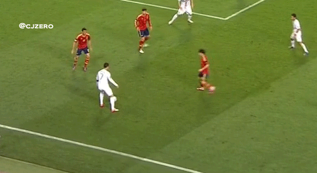

LaLiga is the spanish soccer pro soccer league. It is one of the most prestige leagues and contains some amazing talent. The worlds best soccer players play in this class and there is no argument there.
The first player I would like to address is Cristiano Ronaldo. He has the flashiest feet in the planet. With his loaded arsenal of fancy foot moves, Ronaldo tends to amaze me every time I watch him play.

Next is the cold blooded killer, Lionel Messi. Messi is also know for his amazing feet, change of pace and sniper aim with his shots.